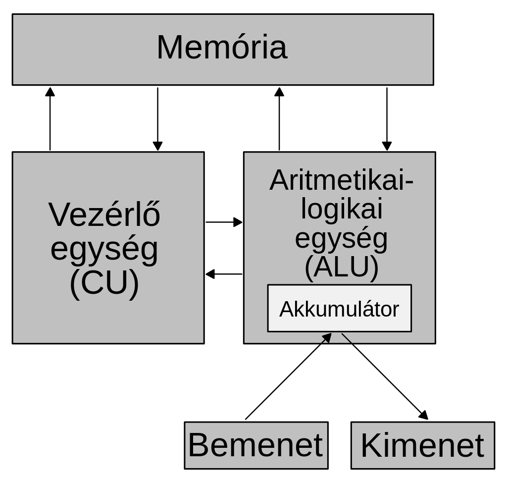

Ismertető
Margittai Neumann János (John von Neumann, született: Neumann János Lajos) magyar születésű matematikus.

Digitális számítógép elvi alapjainak feltalálója
Kvantummechanikai elméleti kutatásai mellett a digitális számítógép elvi alapjainak lefektetésével vált ismertté.
- Született: 1903. december 28.
- Elhunyt: 1957. február 8.
- Nemzetiség: magyar
- Szakterület: Informatika
- Jelentős munkái: Manhattan terv, Neumann-elvek, Halmazelmélet
- Kutatási terület: Kvantummechanika, számítógép tervezése
- Iskolái: Budapest-Fasori Evangélikus Gimnázium Frigyes Vilmos Egyetem Eidgenössische Technische Hochschule Eötvös Loránd Tudományegyetem Göttingeni Egyetem
- Szakmai kitüntetések: Bôcher Memorial Prize (1938) Presidential Medal of Freedom (1957)
„A maga idejében Neumann János volt a világ legokosabb embere.” (Klein György)
Neumann elvek
Az első elektronikusan működő számítógép, az ENIAC építési tapasztalatai alapján a számítógép építéséhez nélkülözhetetlen alapelveket Neumann János matematikus dolgozta ki.
Egy Neumann-architektúrájú számítógép a következő egységekből épül fel:
- A számítógép legyen soros műödésű
- A számítógép a kettes számrendszert használja, és legyen teljesen elektronikus
- A számítógépnek legyen belső memóriája
- A számítógép legyen univerzális

- CPU processzor, amely feladata a számítógép vezérlése CU és az aritmetikai logikai műveletek ALU elvégzése. A processzorokat a műveleti sebességgel (MIPS), órajel frekvenciával GHz), Hány bites, Cash memória méretével.
- OM operatív memória, amely tárolja az éppen futó programokat és a feldolgozás alatt lévő adatokat.
- Háttértárak: a nagymennyiségű adatok tárolása a feladatuk. Az információt a gép kikapcsolása után is megőrzik.
- Beviteli (input) egységek - feladatuk az információ bevitele a számítógépbe.
- Kiviteli (output) egységek - feladatuk a feldolgozott információ megjelenítése
Emlékét őrzi
- Neumann János Egyetem, Kecskemét
- Óbudai Egyetem Neumann János Informatikai kar
- Holdkrátert neveztek el róla
- Róla nevezték el a von Neumann kisbolygót
- Szombathelyen, egy általános iskola is őrzi a nevét
- Neumann János Díj
- Neumann János Számítógép-tudományi Társaság